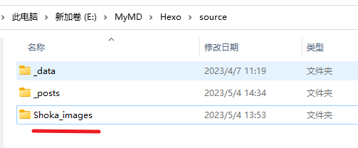

# 微博图床失效后的解决方案
在本主题使用说明文档评论区中发现作者本人以及其他评论者提供的几个解决办法：
- 修改更换图床
- 使用其他网站的图片，更改 images.yml 配置
- 在网上寻找微博图床修复的方法
- 自己找图片放到阿里云 oss 或者其他服务器然后再配置 images.yml
- 使用静态图片替换图床的用法
# 以上方法都实践过，最后还是选择了静态图片替换图床的用法
- 优势是加载快，不像图床等其他图片请求方案。 这个方法是加载图片最快的方法。不用修改之前 images.yml 里的图片名
- 缺点是大图会有点模糊，因为图片是网友提供的之前微博图床那套图片，可能图片是压缩过的，不是特别高清，但是卡片图完全没有问题。
- 为了一劳永逸，放在更换新的图床又有失效的情况。加上对大图不够清晰能够接受。而且这个方案的图片加载又快，最终选择这个方案。
# 修改方法
下载网友提供的 👉原来那套图片
解压到你的 Hexo/soure 下更改文件夹名为 Shoka_images
修改 engine.js 里的代码，修改 randomBG 方法
const randomBG = function (count = 1, image_server = null, image_list = [], self, statics) {
if (image_server) {
if (count && count > 1) {
var arr = new Array(count);
for (var i = 0; i < arr.length; i++) {
arr[i] = image_server + '?' + Math.floor(Math.random() * 999999)
}return arr;
}return image_server + '?' + Math.floor(Math.random() * 999999)
}var parseImage = function (img, size) {
if (img.startsWith('//') || img.startsWith('http')) {
return img} else {
// 图床修改 这是原获取方法// return 'https://tva'+randomServer+'.sinaimg.cn/'+size+'/'+img// 本地用法return url_for.call(self, statics + 'Shoka_images/' + img)
}}if (count && count > 1) {
var shuffled = image_list.slice(0), i = image_list.length, min = i - count, temp, index;
while (i-- > min) {
index = Math.floor((i + 1) * Math.random());
temp = shuffled[index];
shuffled[index] = shuffled[i];
shuffled[i] = temp;
}return shuffled.slice(min).map(function (img) {
return parseImage(img, 'large')
});
}return parseImage(image_list[Math.floor(Math.random() * image_list.length)], 'mw690')
}修改 engine.js 里的代码，修改_cover 方法
hexo.extend.helper.register('_cover', function (item, num) {
const { statics, js, image_server, image_list } = hexo.theme.config;
if (item.cover) {
return this._image_url(item.cover, item.path)
} else if (item.photos && item.photos.length > 0) {
return this._image_url(item.photos[0], item.path)
} else {
// 原用法 本地用法也写到里面了 增加了参数return randomBG(num || 1, image_server, image_list, this, statics);
}})
重新 hexo g 即完成修复！